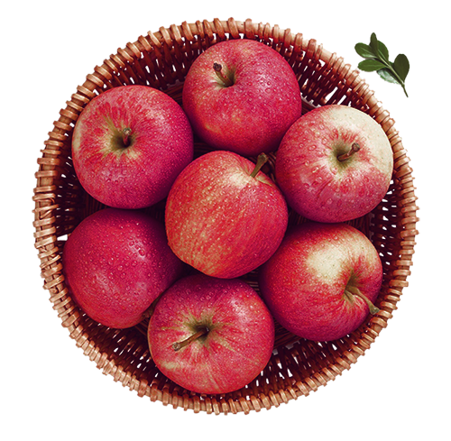

About:
The event started as a small harvest festival in 1982 to showcase the area’s diverse agricultural products. With heavy involvement from Cornell and a partnership with downtown merchants the event was strictly a farmers’ market. Over time, the addition of food and craft vendors, games, and other activities grew the event into one of Ithaca’s biggest fall traditions. The event attracts an audience of more than 30,000 patrons over three days.
Text Source Image Source Lato Font SpaceMono Font